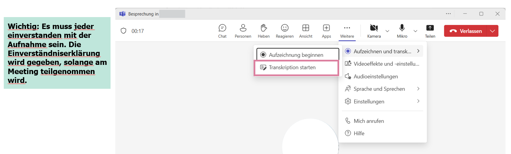
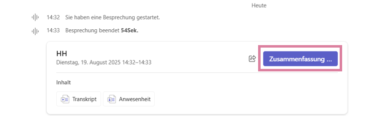
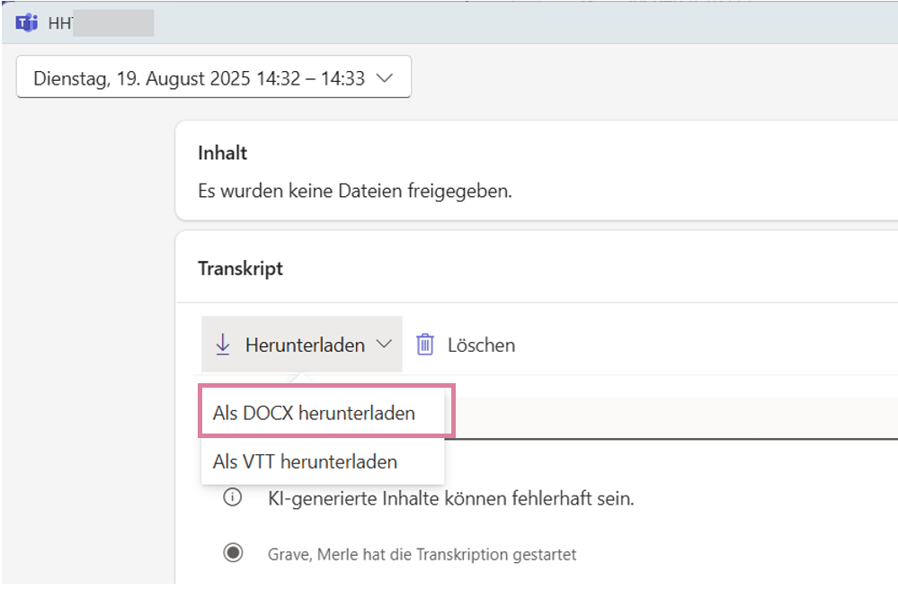
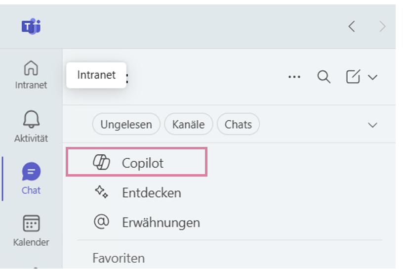
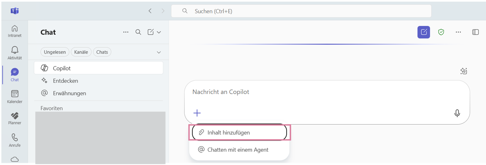
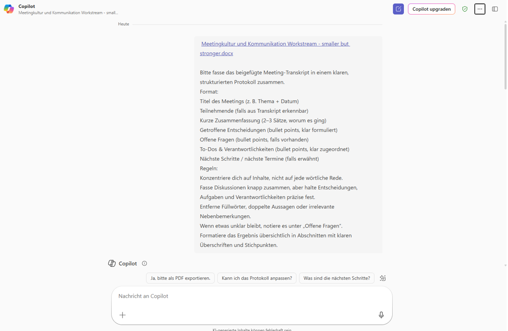
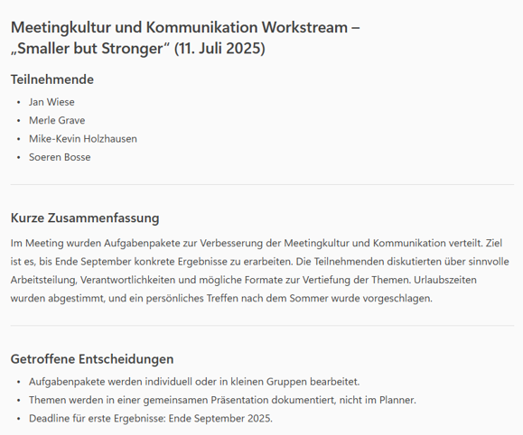
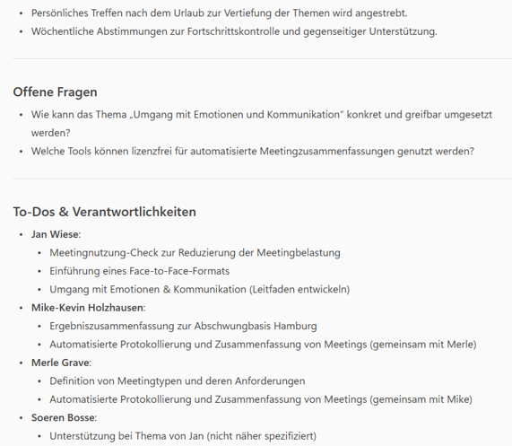
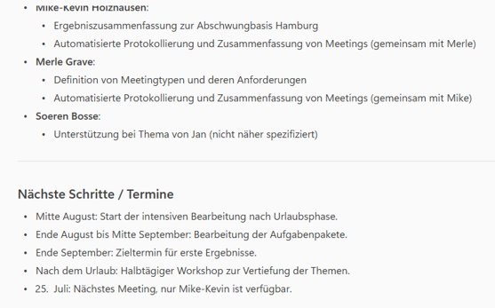

Meetings kosten Zeit – oft mehr, als sie bringen. Entscheidungen versanden, Aufgaben gehen unter, Protokolle fehlen oder entstehen erst viel zu spät. Der Grund: Manuelle Dokumentation frisst Ressourcen und wird deshalb häufig vernachlässigt. Genau hier setzt der Smart Minutes-Leitfaden an. Er zeigt zwei einfache Methoden, wie MS Teams und KI die Protokollerstellung nahezu vollständig automatisieren – ob über Transkript + KI oder mit dem MS-Teams-Facilitator. So entstehen klare, vollständige und verbindliche Protokolle fast wie von selbst.
Inhaltsverzeichnis
✨ Der Nutzen
Nachhaltige Dokumentation von Meetinginhalten sowie allen offenen Punkten und To-Dos mit absolut minimalem Aufwand.
Wichtig: Zu Beginn des Termins muss darauf hingewiesen werden, dass eine Aufzeichnung/Transkription erfolgt. Teilnehmenden müssen die Möglichkeit haben zu widersprechen. Frage-Tipp: Ist jemand dagegen?
📋 Methode 1: Protokollerstellung anhand Transkript und KI (Copilot)
Schritt 1: Transkription starten
Wichtig: Zu Beginn des Termins muss darauf hingewiesen werden, dass eine Aufzeichnung/Transkription erfolgt. Teilnehmenden müssen die Möglichkeit haben zu widersprechen. Frage-Tipp: Ist jemand dagegen?
Klicken Sie in der Teams-Besprechung (nachdem Sie die Zustimmung aller erhalten haben!) auf "Weitere" (die drei Punkte) und wählen Sie "Transkription starten". Teams informiert alle Teilnehmenden zusätzlich mit einem Banner.

Schritt 2: Zusammenfassung & Transkript finden
Sobald das Meeting beendet ist, finden Sie im entsprechenden Teams-Chat (oder Kanal) eine Kachel mit den Meeting-Details. Hier können Sie oft schon eine erste KI-"Zusammenfassung" sehen. Für unser Protokoll benötigen wir jedoch das volle Transkript.

Schritt 3: Transkript als .DOCX herunterladen
Klicken Sie auf die Meeting-Kachel, um die Details zu öffnen. Gehen Sie zum Abschnitt "Transkript". Klicken Sie dort auf den Button "Herunterladen" und wählen Sie die Option "Als .DOCX herunterladen". Diese Word-Datei ist die Rohfassung für unsere KI.

Schritt 4: Protokollerstellung mit Copilot
Gehen Sie in Ihrer Teams-Seitenleiste auf "Chat" und wählen Sie den "Copilot" aus. Dies öffnet ein Chatfenster, in dem Sie mit der KI interagieren können.

Schritt 5: Transkript-Datei anhängen
Klicken Sie im Copilot-Chat auf die Büroklammer (oder den Link "Inhalt hinzufügen"), um eine Datei anzuhängen. Laden Sie die .docx-Transkriptdatei hoch, die Sie in Schritt 3 heruntergeladen haben.

Schritt 6: Den perfekten Prompt verwenden
Dies ist der magische Schritt. Fügen Sie nun zusammen mit der angehängten Datei einen klaren Arbeitsauftrag (Prompt) ein. Eine bewährte Vorlage finden Sie unten. Dieser Prompt weist die KI an, das Transkript in ein strukturiertes Protokoll umzuwandeln.

PROMPT VORLAGE (Zum Kopieren)
Bitte fasse das beigefügte Meeting-Transkript in einem klaren, strukturierten Protokoll zusammen.
Format:
1. Titel des Meetings (z. B. Thema + Datum)
2. Teilnehmende (falls aus Transkript erkennbar)
3. Kurze Zusammenfassung (2–3 Sätze, worum es ging)
4. Getroffene Entscheidungen (bullet points, klar formuliert)
5. Offene Fragen (bullet points, falls vorhanden)
6. To-Dos & Verantwortlichkeiten (bullet points, klar zugeordnet)
7. Nächste Schritte / nächste Termine (falls erwähnt)
Regeln:
- Konzentriere dich auf Inhalte, nicht auf jede wörtliche Rede.
- Fasse Diskussionen knapp zusammen, aber halte Entscheidungen, Aufgaben und Verantwortlichkeiten präzise fest.
- Entferne Füllwörter, doppelte Aussagen oder irrelevante Nebenbemerkungen.
- Wenn etwas unklar bleibt, notiere es unter „Offene Fragen“.
- Formatiere das Ergebnis übersichtlich in Abschnitten mit klaren Überschriften und Stichpunkten.Schritt 7: Das fertige Protokoll prüfen
Copilot analysiert das Transkript und erstellt in Sekundenschnelle ein vollständiges, strukturiertes Protokoll, das genau Ihrem gewünschten Format entspricht. Es listet alle wichtigen Punkte übersichtlich auf.



Schritt 8: Exportieren und Verteilen
Sie können dieses Protokoll nun direkt aus Copilot heraus kopieren, als PDF/Word exportieren (je nach Copilot-Version) und an alle Teilnehmenden oder im entsprechenden Teams-Kanal teilen. WICHTIG: Lesen Sie das Protokoll immer kurz gegen, um sicherzustellen, dass die KI alle Nuancen korrekt erfasst hat.
✅ Empfehlung & Pro-Tipps
Für welche Meetings ist das ideal?
Diese Methode ist besonders wertvoll für:
- Projekt-Kick-offs & Workshops: Bei denen viele Ideen gesammelt und Aufgaben verteilt werden.
- Wichtige Abstimmungsrunden & Lenkungsausschüsse: Wenn getroffene Entscheidungen präzise und revisionssicher dokumentiert werden müssen.
- Regelmäßige Team-Meetings: Um den Überblick über laufende Aufgaben und Verantwortlichkeiten zu behalten.
- Wissensübergaben: Um komplexe Inhalte für Teammitglieder festzuhalten, die nicht teilnehmen konnten.
Pro-Tipp 1: Hybrid- & Offline-Meetings
Der Benefit "offline" wurde erwähnt. Aber wie? Ganz einfach: Nehmen Sie an einem physischen Meeting in einem Konferenzraum teil? Starten Sie auf Ihrem Laptop (oder sogar auf der Teams-Handy-App) die Besprechung, legen Sie das Gerät in die Mitte des Tisches und starten Sie nur die Transkription (ohne Anruf oder Video). Das Mikrofon Ihres Geräts zeichnet das Gespräch auf und erstellt ein Transkript des physischen Meetings. Holen Sie auch hier unbedingt die Zustimmung aller Anwesenden ein!
Pro-Tipp 2: Sprecher-Identifikation verbessern
Die Transkription funktioniert am besten, wenn Teams die Stimmen den richtigen Personen zuordnen kann. Dies klappt nur zuverlässig, wenn alle Teilnehmenden über ihr eigenes Teams-Konto im Anruf sind. Ermutigen Sie bei Hybrid-Meetings alle, sich einzeln einzuwählen (Mikrofone dann stummschalten).
🤖 Methode 2: Der MS Teams Facilitator (Live-Agent)
Der Microsoft Teams Facilitator ist ein KI-gestützter Agent, der Besprechungen in Echtzeit moderiert und dokumentiert. Anders als bei Methode 1 müssen Sie hier nicht bis zum Ende warten: Der Facilitator schreibt live mit, sichtbar für alle.
.loop-Datei in OneDrive gespeichert (Microsoft Purview Compliance).
So funktioniert es: Schritt für Schritt
1. Aktivierung (Vor oder im Meeting)
Sie können den Facilitator bei der Planung hinzufügen oder spontan im laufenden Meeting aktivieren.
Klicken Sie in der Meeting-Leiste auf "Apps" (+) oder nutzen Sie den Copilot-Button.
2. Während des Meetings: Live-Dokumentation
Der Facilitator agiert nun öffentlich sichtbar im Besprechungschat oder im Bereich "Notizen". Alle Teilnehmer sehen, wie die KI mitschreibt und können korrigierend eingreifen.
KI Generiert aus dem Transkript...
🎯 Ziele & Agenda- Abstimmung Marketing Q3 (Erledigt)
- Budgetfreigabe (In Diskussion)
- Launch-Termin ist auf den 15.09. festgelegt.
Ich habe notiert, dass Jan das Budget prüft. Gibt es eine Deadline dafür?
3. Finaler Output: Das fertige Protokoll
Am Ende des Termins müssen Sie nichts mehr tun. Das fertige Protokoll inklusive aller ToDos liegt bereits als .loop-Komponente im Chat vor.
- Zugriff: Jederzeit im Meeting-Chat abrufbar.
- Weiterverarbeitung: Inhalte können einfach kopiert, in eine E-Mail eingefügt oder direkt in Planner/To Do übernommen werden.
- Dynamik: Da es eine Loop-Datei ist, können Aufgaben auch nach dem Meeting noch abgehakt werden.
✅ Wann nutze ich was?
- Methode 1 (Transkript + Prompt): Für formelle, revisionssichere Protokolle, die als statisches PDF/Word abgelegt werden müssen.
- Methode 2 (Facilitator): Für agile Teams, operative Meetings und Workshops, bei denen die sofortige Verfügbarkeit von Aufgaben und eine aktive Moderation wichtiger sind als ein formelles Dokument.